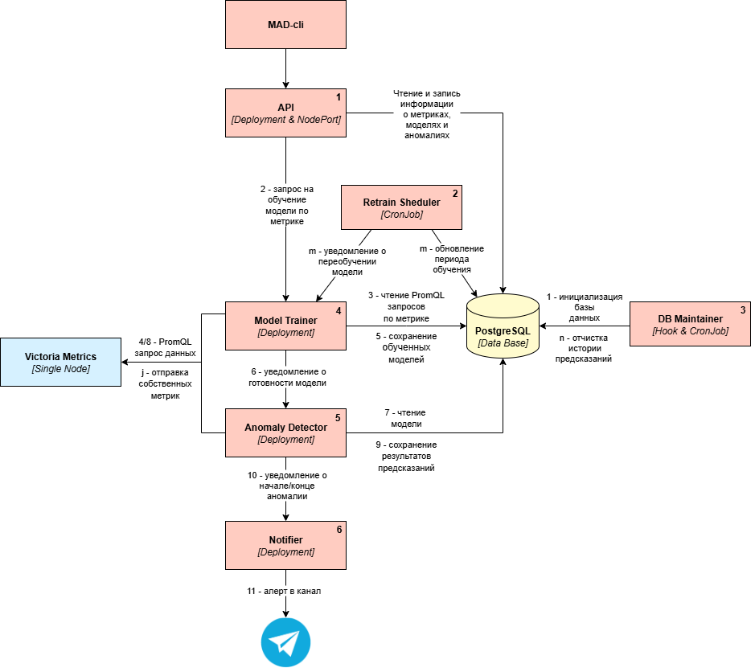

Обзор
Система состоит из нескольких микросервисов, которые взаимодействуют друг с другом через API и сообщения. Состояние системы и данные хранятся в PostgreSQL.
Архитектура системы MAD¶

Компоненты системы¶
1. API¶
Роль: Основной REST API шлюз для управления системой.
Основные функции:
-
Предоставляет CRUD API для управления моделями, метриками и аномалиями
-
Принимает запросы на обучение и переобучение моделей
-
Валидирует входные данные и управляет состоянием системы
-
Интегрируется с сервисом обучения моделей
2. Retrain Scheduler¶
Роль: Планировщик переобучения моделей.
Основные функции:
-
Проверка необходимости переобучения моделей
-
Управление версиями моделей
-
Поддержка разных стратегий переобучения:
-
Скользящее окно (sliding_window)
-
Расширяющееся окно (expanding_window)
-
Интеграция с сервисом обучения
3. DB Maintainer¶
Роль: Утилита управления структурой базы данных.
Основные функции:
-
Инициализация схемы БД
-
Управление конфигурацией метрик и моделей
-
Очистка старых версий моделей
-
Миграции данных
4. Model Trainer¶
Роль: Сервис обучения и оптимизации ML моделей.
Основные функции:
-
Обучение новых LSTM моделей на исторических данных
-
Автоматическая оптимизация гиперпараметров через Optuna
-
Переобучение существующих моделей по расписанию
-
Валидация качества моделей
-
Сохранение обученных моделей в базу данных
Процесс обучения: 1. Получение исторических данных из VictoriaMetrics
-
Предобработка данных (интерполяция, масштабирование)
-
Оптимизация гиперпараметров (если включено)
-
Обучение LSTM сети
-
Валидация и сохранение модели
5. Anomaly Detection¶
Роль: Ядро системы - анализ метрик в реальном времени и обнаружение аномалий.
Основные функции:
-
Загружает активные модели из базы данных
-
Получает данные метрик из VictoriaMetrics
-
Выполняет предсказания с использованием LSTM моделей
-
Обнаруживает аномалии на основе пороговых значений
-
Управляет жизненным циклом аномалий (начало/окончание)
-
Интегрируется с сервисом уведомлений
Алгоритм работы: 1. Загрузка актуальных моделей из кэша или БД
-
Получение данных метрик за временное окно
-
Масштабирование данных и выполнение предсказаний
-
Расчет ошибок предсказания и сравнение с порогом
-
Классификация аномалий (точечные, групповые, системные)
-
Сохранение результатов в БД
6. Anomaly Notifier¶
Роль: Сервис управления уведомлениями об аномалиях.
Основные функции:
-
Прием событий об аномалиях от детектора
-
Форматирование сообщений с использованием Jinja2 шаблонов
-
Отправка уведомлений в Telegram
-
Поддержка разных типов уведомлений (начало/окончание аномалии)
Формат уведомлений:
-
Старт аномалии: тип, метрика, время начала, описание
-
Завершение аномалии: длительность, статистика
-
Поддержка Markdown форматирования
7. PostgreSQL Database¶
Роль: Центральное хранилище данных системы.
Основные таблицы:
-
models_info- метаинформация о моделях -
models- версии моделей и их параметры -
metrics- конфигурация метрик -
prediction_errors- результаты предсказаний -
anomaly_points- точечные аномалии -
anomaly_system- системные аномалии
Взаимодействие компонентов¶
1. Процесс обучения модели¶
sequenceDiagram
participant Client
participant API
participant DB
participant Trainer
participant VictoriaMetrics
Client->>API: POST /models (создание модели)
API->>DB: Сохранение конфигурации модели
API->>Trainer: Запрос на обучение
Trainer->>VictoriaMetrics: Запрос исторических данных
VictoriaMetrics-->>Trainer: Данные метрик
Trainer->>Trainer: Обучение LSTM модели
Trainer->>DB: Сохранение обученной модели
Trainer->>API: Уведомление о готовности2. Процесс обнаружения аномалий¶
sequenceDiagram
participant Detector
participant DB
participant VictoriaMetrics
participant Notifier
Detector->>DB: Загрузка активных моделей
loop Для каждой модели
Detector->>VictoriaMetrics: Запрос актуальных данных
VictoriaMetrics-->>Detector: Данные метрики
Detector->>Detector: Выполнение предсказания
Detector->>Detector: Сравнение с порогом
Detector->>DB: Сохранение результатов
alt Обнаружена аномалия
Detector->>Notifier: Уведомление об аномалии
end
end3. Процесс переобучения¶
sequenceDiagram
participant Scheduler
participant DB
participant Trainer
Scheduler->>DB: Проверка необходимости переобучения
DB-->>Scheduler: Список моделей для переобучения
loop Для каждой модели
Scheduler->>DB: Создание новой версии
Scheduler->>Trainer: Запрос на переобучение
Trainer->>Trainer: Обучение новой версии
Trainer->>DB: Сохранение новой модели
Trainer->>DB: Обновление активной версии
end